Scentbird App Redesign
A redesign of the Scentbird iOS app that helps people find a scent that feels like theirs, and feel confident subscribing to it.
- Role
- UI/UX design
- Tools
- Figma
Scentbird is a fragrance discovery and subscription service that allows users to explore a large collection of perfumes, receive personalized recommendations, and select fragrances for monthly delivery. The iOS app combines fragrance discovery, personalization, product browsing, and subscription management into one experience.
I chose Scentbird because its concept has a lot of potential as a discovery experience, but the current app does not fully capture what makes fragrance distinctive and personal. Fragrance is strongly connected to memory, identity, beauty, mood, and specific moments, yet it is an invisible medium that is difficult to communicate through a screen. My redesign explores how Scentbird could turn fragrance discovery into a more immersive and personalized experience, allowing users to explore different scents, understand their preferences, and curate a scent identity that feels uniquely theirs.
- Problem statement and project goals
- Research and key insights
- Persona, empathy map and customer journey map
- Information architecture and user flow
- Low-fi and digital wireframes
- Style guide
- High-fidelity screens and interactive prototype
Where the current app creates friction
To understand where the current Scentbird experience creates friction, I analyzed the existing app experience alongside App Store and Google Play reviews and fragrance-community discussions. I focused on how users discover fragrances, evaluate recommendations, manage their queue, and understand their subscription.

Low-fi first
I started with low-fidelity wireframes to settle the structure of the quiz, profile, matches and case before moving to digital wireframes for the key moments.

How might we help people find a scent that feels like theirs, and feel confident subscribing to it?
Fragrance is personal, but on a screen it's invisible. In the current app, a large catalog is hard to narrow down, recommendations don't say why they fit, and plan and billing details are hard to find. Users are left guessing, and a guess is hard to subscribe to.
-
Goal 01
Personalize discovery
Help users discover fragrances based on their individual tastes and moods.
→ The scent quiz -
Goal 02
Create a sensory experience
Make an invisible product feel tangible through visuals, language and the scent wheel.
→ Scent profile -
Goal 03
Improve product exploration
Give every fragrance clear notes, a match score and a reason it fits.
→ Matches + detail -
Goal 04
Simplify subscription
Show the plan, price and next shipment plainly, with skip and cancel close at hand.
→ Your case
Three questions, three findings
The research centered around three questions: how easily can users discover and evaluate fragrances, how clearly does the app communicate personalized recommendations, and how easily can users understand and manage their subscription?
-
01
Discovery
Search + organization
Users reported difficulty finding or revisiting fragrances, including issues with search and accessing product information.
Source: Google Play reviews -
02
Personalization
Recommendations need context
Some users questioned whether recommendations accurately reflected their preferences, highlighting an opportunity to make personalization more transparent.
Source: Fragrance community feedback -
03
Subscription
Clarity builds confidence
Users reported confusion around cancellation, billing, and subscription management across the app and website.
Source: App Store reviews + Scentbird support
What the research pointed to
-
01
Clarity builds confidence
Users want to understand a fragrance before committing to a subscription.
-
02
Recommendations need context
Users are more likely to trust recommendations when they understand why a scent fits them.
-
03
Discovery can feel overwhelming
A large fragrance library needs intuitive filtering and organization.
-
04
Personalization should feel useful
Users want their preferences to actively shape what they see.
-
05
Search + organization
Users need simple ways to find, save, and revisit fragrances.
-
06
Subscriptions need transparency
Clear information helps users feel confident about recurring orders.
Designed for curious fragrance shoppers like Maya
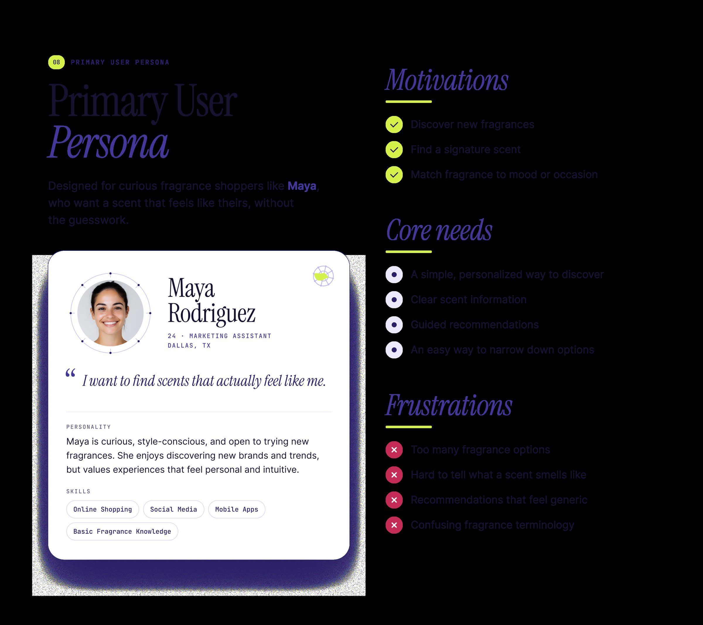
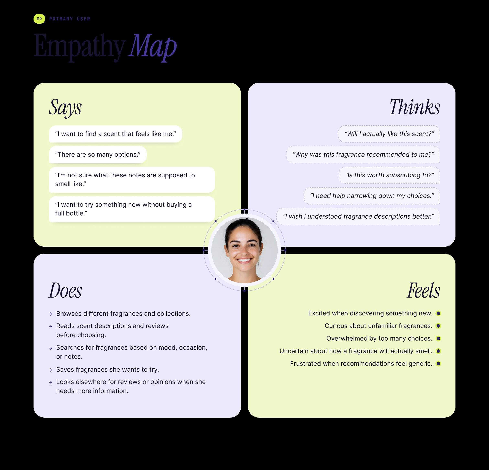
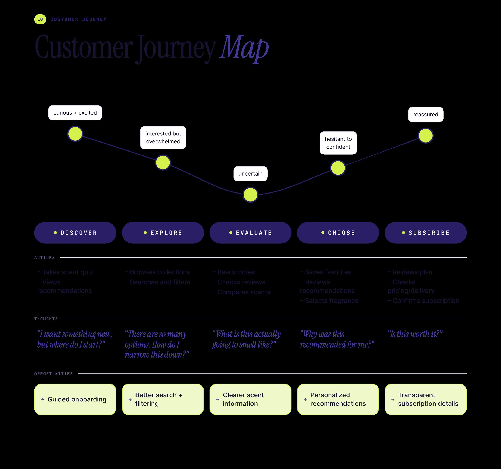
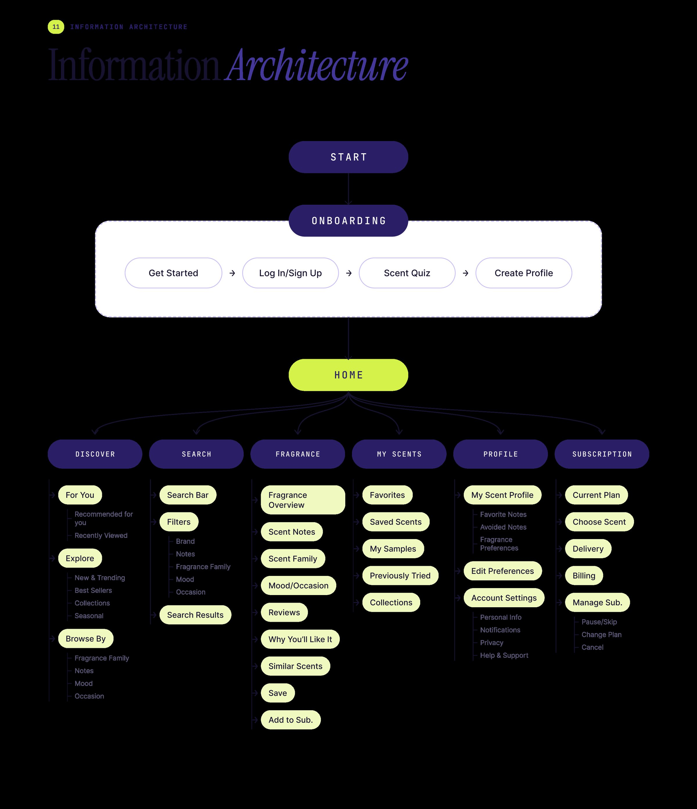
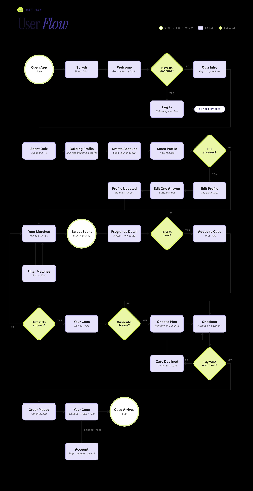
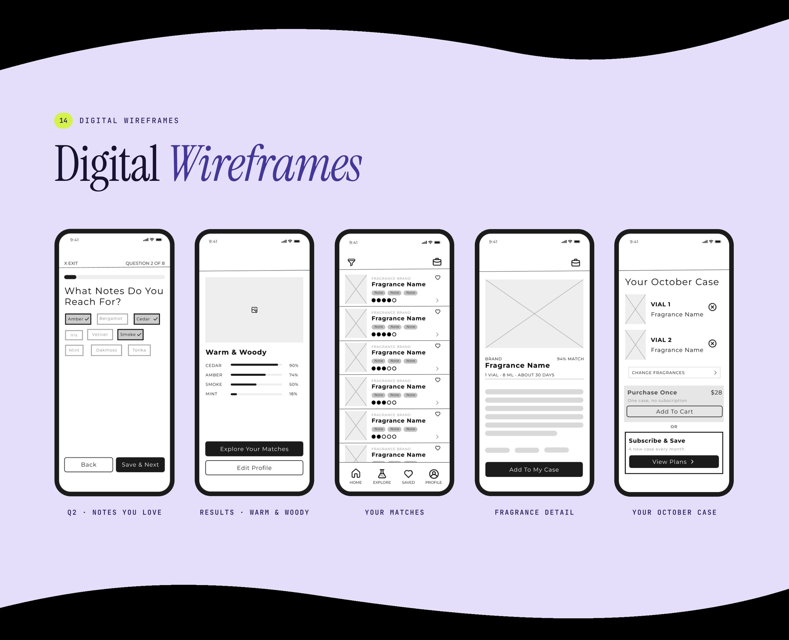
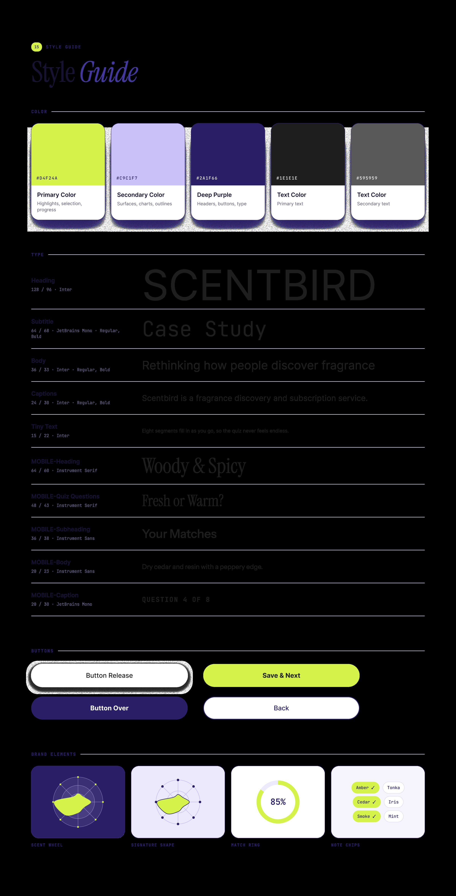
The quiz asks about feelings instead of fragrance jargon. Each question explains itself in one line, familiar notes like citrus and amber anchor each end of the scale, and a live result card updates as you drag to describe how that mix will smell. Eight segments fill in as you go so the quiz never feels endless, and answers save at every step.
The scent profile makes taste visible. A scent wheel plots eight fragrance families as one shape, results lead with a named scent family instead of a list of products, and any answer can be edited later, with matches refreshing to reflect it. Navigation stays to three tabs: Matches, Profile and Case.
Matches are ranked by how well each scent fits, with a ring showing the match score, notes as chips that reuse the quiz's language, and filters for price, season and stock. The fragrance detail adds context before commitment: a one-line reason it matches, vial size translated into about 30 days of wear, key notes and similar scents.
The subscription can be read at a glance. The case is named for its owner and shows exactly what ships next, vials can be swapped or removed in place, skipping sits next to the price instead of in the fine print, and Subscribe & save and purchase once are shown side by side with prices up front.
Major screens, each tied to a project goal
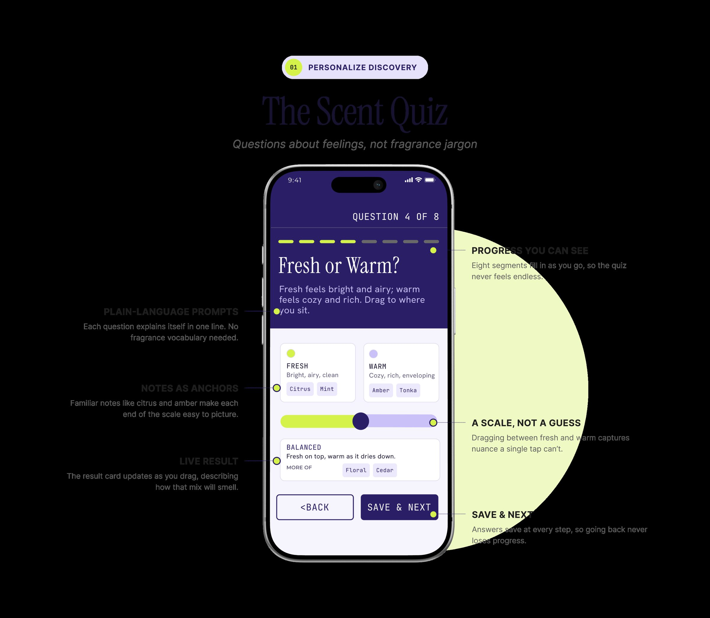
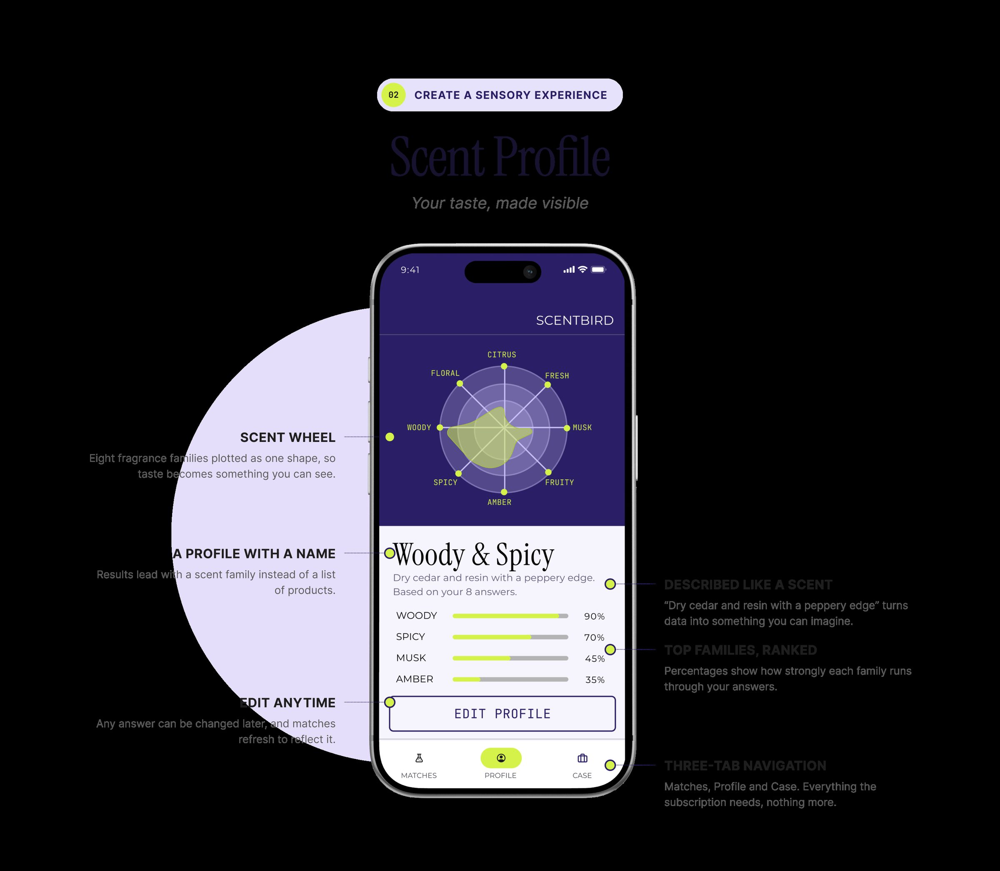

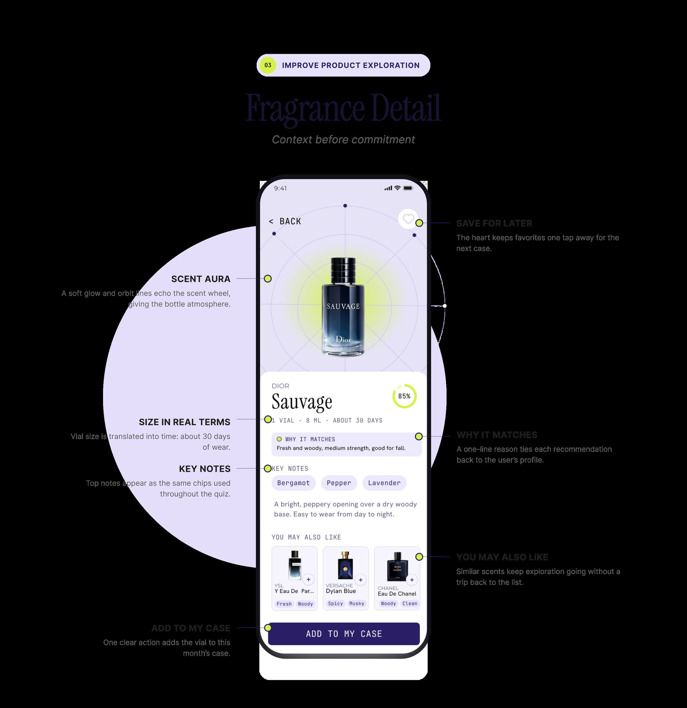
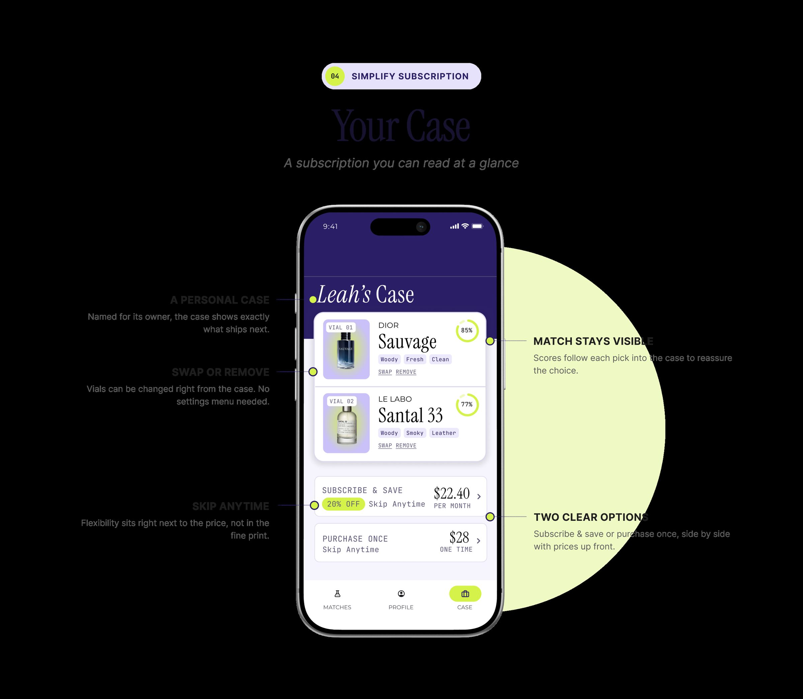
Every screen, grouped by flow, from first launch to checkout
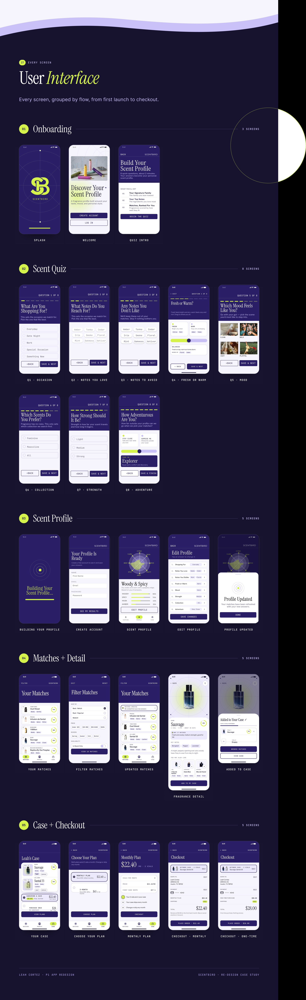